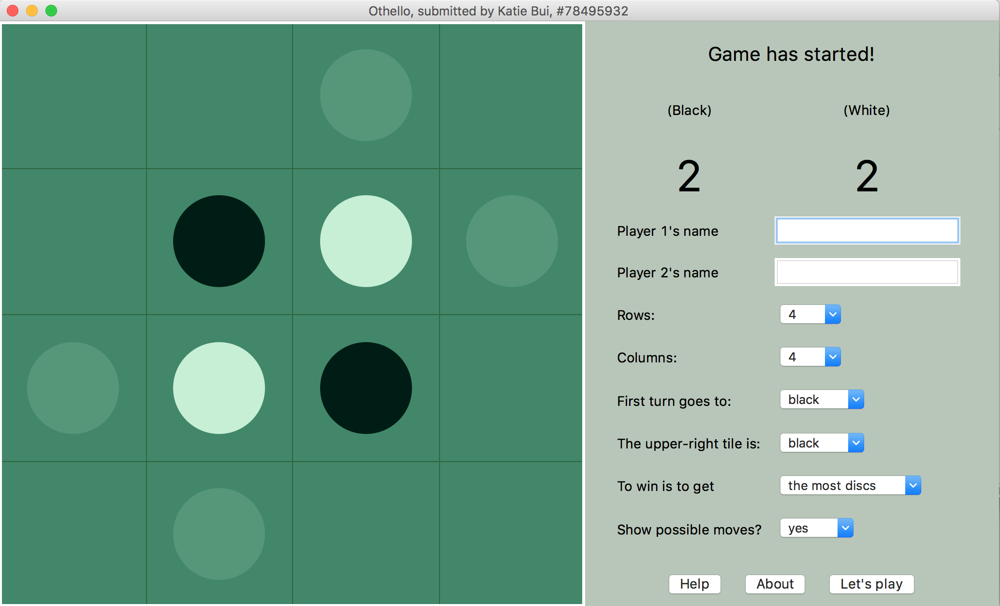

home
Thanks for visiting!
Coding is a lot of fun. Building stuff is a lot of fun. I've done things like building
websites and games. Ultimately, I want to help build really cool paradigm-shifting things.
I kind of believe that humanity is sci-fi waiting to happen.
If you want to know what goes on inside my head, check out "journal". If you want my
"resume virtues", check out "work". "projects" is a bunch of other cool stuff
I like to do and have done, and "about" has some basic info about me and this website.
Here's my face!

projects
Things that I am doing or have done; not necessarily computer science-related
Personal
Winter Quarter 2016
Video Game Thesis about Mental Health
My good friend Miranda and I were geeking out about awesome games like Undertale and Life is Strange, both nonviolent games that deal with the psyche in some way. Both of us are in the Campuswide Honors Program at our university, and we're required to submit a thesis. We thought that making a game about depression would be a great idea! We plan to finish this Spring 2017.
3D Tic Tac Toe with AI
(See "Winter Break 2015/16".) Learning OpenGL incrementally
during the quarter seems like a good idea.
Udacity's "Intro to Machine Learning" course
Winter Break 2015/16
This website
In the span of 48 hours, 'katiebui.com' was forged from Google, sweat and tears. All the brush stroke-y
parts were done in Photoshop, and I got them from here. Finally put all
those weeks of learning HTML/CSS to use! Gotta thank timpanus
for helping me figure out horizontal smooth-scrolling.
While it was fun, I don't think I'd want to do this for a living, haha.
Ironically, building websites was how I became familiar with coding; I used to edit Neopets
'userlookups' and 'shop pages'.
Set up automatic compiling and linking C++ files on my Mac
In one of my classes, Intro to C++, my professor had us use a virtual machine running Ubuntu that he
set up. It automatically took care of compiling, linking, and organizing files for students. After
the class ended, I wanted the same setup on my personal computer. I could have asked my professor
how he did it, but challenges are more fun. Using his files as a guide, I had to learn
Bash scripting--there were quite a few differences between Bash and Linux. In the process, Git and third-party package managers became my best friends.
(Scrapped for later) 3D Tic Tac Toe with AI
I wanted to create a simple game that emphasizes learning its AI and GUI components.
It took me about a couple of hours to code up the game logic, but little did I know
that OpenGL would take quite a bit of time to learn!
Along with setting up all the libraries (GLEW, GLFW, GLM) and linking them all
correctly, I had to figure out the best free resources online to teach me OpenGL.
School
Fall Quarter 2015
Text editor (C++)
Though this project was challenging and pretty cool, it was partially done by my professor, so
it doesn't really warrant a picture. I basically had to turn a black box with numbers on the
sides into an interactive text editor not unlike Vim. It allows you to insert text,
delete lines, add lines, navigate the screen with the keyboard, and labor-intensive of all,
allow multiple undos and redos. There were twenty or so modules in the project; it was my
first time until my internship that I had worked with a project of that complexity!
Spring Quarter 2015
Othello game with GUI (Python)

This project was grueling, but soooo satisfying. "Othello" from scratch!
The game board can stretch in proportion to the window's size, however the user decides
to resize it. It also can point out possible moves to the player.
about
the site
Hosted on Github, edited with Vim on Terminal, blogging with Jekyll. Making this site was a
mini-project taken on winter break. Admittedly, building it from scratch taught me that front-end web
development wasn't my thing. But doing that enabled a lot of control over design that using a template
wouldn't have. Also made me appreciate Wordpress for its full-package services of hosting and whatnot haha.
me
I'm an unabashed idealist born in San Jose, California. Much of what I am today involved
my friends' help, deep introspection and questioning of the systems and immigrant family virtues handed
to me.
Originally, I had entered college as a pre-med Chemistry major because of childhood dreams of becoming
a doctor. At the same time, playing the French horn captivated me, so then I decided to double
as Chemistry/Music. Some of my greatest friends and mentors came from that period. By the end of the
year, I figured I didn't want to be a doctor or a musician, so I swerved my focus to computer
science despite my success in Chemistry (3.9 GPA).
It's been a year since I've made that mental switch. I'm having way too much fun with computer science
now! I still indulge in my hobbies: anime, music performance and composition, painting and drawing,
fashion design, cooking, reading, and writing philosophy.
If you'd like to contact me, hit me up at kgbui@uci.edu; that's where I actually check my email.